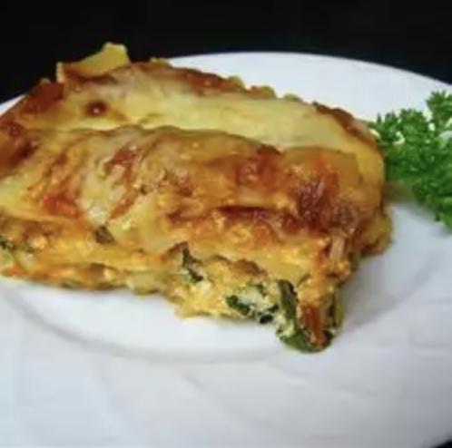

Lasagna

Fresh lasagna
Ingredients
- cooking spray
- 9 lasagna noodles
- 1 bunch fresh spinach
- 8 oz container ricotta cheese
- 1/2 cup shredded mozzarella cheese
- 1 egg, lightly beaten
- 1 pinch grounded nutmeg
- 1 pinch dried basil
- salt and ground black pepper to taste
- 1 cup pasta sauce
- 1/2 cup shredded mozzarella cheese
- 1/4 cup grated parmesan cheese